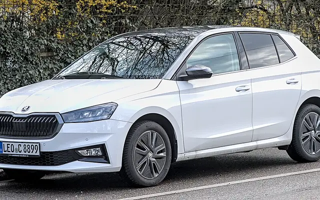

Par Motor › Precios por modelo › Skoda Fabia
Precio de segunda mano · noviembre de 2026¿Cuánto vale un Skoda Fabia de segunda mano?

Precio justo estimado de un Skoda Fabia usado en España, año por año, con los kilómetros normales para su edad y en buen estado: de 2.600 € a 22.800 €. Para tasar el tuyo con sus kilómetros reales y su estado, usa el tasador gratis.
Precios del Skoda Fabia por año
Fabia I (1999–2007)
Precio de nuevo: 1.2 64 CV, 9.500 € · 1.9 TDI 100 CV, 13.000 € · RS 1.9 TDI 130 CV, 17.000 €
| Año | Km normales | 1.2 64 CV · Gasolina | 1.9 TDI 100 CV · Diésel | RS 1.9 TDI 130 CV · Diésel |
|---|---|---|---|---|
| 2007 | 100.000 km | 3.800 € | 5.100 € | 6.600 € |
| 2006 | 100.000 km | 3.600 € | 4.800 € | 6.300 € |
| 2005 | 100.000 km | 3.400 € | 4.600 € | 6.000 € |
| 2004 | 100.000 km | 3.300 € | 4.300 € | 5.700 € |
| 2003 | 100.000 km | 3.100 € | 4.100 € | 5.400 € |
| 2002 | 100.000 km | 2.900 € | 3.900 € | 5.100 € |
| 2001 | 100.000 km | 2.800 € | 3.700 € | 4.800 € |
| 2000 | 100.000 km | 2.600 € | 3.500 € | 4.600 € |
| 1999 | 100.000 km | 2.600 € | 3.500 € | 4.500 € |
Fabia II (2007–2014)
Precio de nuevo: 1.2 70 CV, 11.500 € · 1.4 TDI 80 CV, 13.500 € · 1.2 TSI 105 CV, 14.000 €
| Año | Km normales | 1.2 70 CV · Gasolina | 1.4 TDI 80 CV · Diésel | 1.2 TSI 105 CV · Gasolina |
|---|---|---|---|---|
| 2014 | 100.000 km | 6.600 € | 7.700 € | 8.100 € |
| 2013 | 100.000 km | 6.400 € | 7.300 € | 7.800 € |
| 2012 | 100.000 km | 6.000 € | 6.900 € | 7.400 € |
| 2011 | 100.000 km | 5.700 € | 6.500 € | 7.000 € |
| 2010 | 100.000 km | 5.400 € | 6.200 € | 6.600 € |
| 2009 | 100.000 km | 5.200 € | 5.900 € | 6.300 € |
| 2008 | 100.000 km | 4.900 € | 5.600 € | 5.900 € |
| 2007 | 100.000 km | 4.600 € | 5.300 € | 5.600 € |
La cadena de distribución se estira antes de tiempo y puede saltar un diente, con una avería muy cara. Un traqueteo metálico unos segundos al arrancar en frío es la señal de alarma. Desde 2013-2014 se montó otro motor con correa que no tiene este problema. Pregunta si ya se cambiaron la cadena y el tensor.
Fabia III (2014–2021)
Precio de nuevo: 1.0 MPI 75 CV, 12.500 € · 1.4 TDI 90 CV, 15.500 € · 1.0 TSI 110 CV, 14.500 €
| Año | Km normales | 1.0 MPI 75 CV · Gasolina | 1.4 TDI 90 CV · Diésel | 1.0 TSI 110 CV · Gasolina |
|---|---|---|---|---|
| 2021 | 80.000 km | 8.900 € | 10.000 € | 10.300 € |
| 2020 | 95.000 km | 7.900 € | 10.100 € | 9.200 € |
| 2019 | 100.000 km | 7.600 € | 10.200 € | 8.800 € |
| 2018 | 100.000 km | 7.500 € | 10.200 € | 8.700 € |
| 2017 | 100.000 km | 7.500 € | 10.200 € | 8.700 € |
| 2016 | 100.000 km | 7.400 € | 9.800 € | 8.600 € |
| 2015 | 100.000 km | 7.300 € | 9.300 € | 8.500 € |
| 2014 | 100.000 km | 7.200 € | 8.800 € | 8.400 € |
Fabia IV (2021–hoy)
Precio de nuevo: 1.0 MPI 80 CV, 16.000 € · 1.0 TSI 116 CV, 18.500 € · 1.5 TSI 150 CV, 22.000 €
| Año | Km normales | 1.0 MPI 80 CV · Gasolina | 1.0 TSI 116 CV · Gasolina | 1.5 TSI 150 CV · Gasolina |
|---|---|---|---|---|
| 2026 | 5.000 km | 16.600 € | 19.200 € | 22.800 € |
| 2025 | 20.000 km | 14.600 € | 16.900 € | 20.100 € |
| 2024 | 35.000 km | 13.900 € | 16.100 € | 19.100 € |
| 2023 | 50.000 km | 13.200 € | 15.200 € | 18.100 € |
| 2022 | 65.000 km | 12.500 € | 14.400 € | 17.200 € |
| 2021 | 80.000 km | 11.400 € | 13.100 € | 15.600 € |
Kilómetros normales: 15.000 al año en gasolina, híbridos y eléctricos, y 20.000 en diésel, con un máximo de 100.000 km (por encima no tasamos: el precio depende demasiado del historial de cada coche). Cifras redondeadas a 100 €.
Preguntas frecuentes
¿Cuánto vale un Skoda Fabia de segunda mano?
Según el año, la versión y los kilómetros, un Skoda Fabia usado vale hoy de 2.600 € a 22.800 € en España. El más barato de nuestra tabla es un 1.2 de 1999 (2.600 €) y el más caro un 1.5 TSI de 2026 (22.800 €). Son precios justos estimados entre particulares y profesionales, con los kilómetros normales para su edad y en buen estado.
¿Cuánto valor pierde un Skoda Fabia al año?
Con unos años encima, un Skoda Fabia pierde alrededor de un 5 % de su valor cada año (calculado sobre el 1.0 MPI de la generación Fabia IV). Los primeros años la caída es mayor y a partir de los 70.000 km se acelera.
¿Qué motorizaciones tiene el Skoda Fabia?
En nuestra base de datos hay versiones gasolina y diésel, en 4 generaciónes: Fabia I, Fabia II, Fabia III y Fabia IV.
¿Qué motores del Skoda Fabia dan problemas?
Ojo con el 1.2 y 1.4 TSI/TFSI de primera generación (cadena) (1.2 TSI, RS 1.4 TSI, 2007–2013): son motores con fallos graves y muy extendidos. Antes de comprar uno, pide el historial de mantenimiento y comprueba si ya se hizo la reparación. El resto de motores no tiene problemas fuera de lo normal.
¿Cómo sé si me piden demasiado por un Skoda Fabia?
Abre el tasador de Par Motor, elige el Skoda Fabia, el año y los kilómetros reales, y escribe lo que te piden. Te diremos si está por debajo del precio justo (chollo) o por encima (caro). Es gratis y no pide registro ni matrícula.
Otros Skoda
Compara su coste real
El precio de compra es solo una parte. Mira cuánto te costaría al mes con combustible, seguro, neumáticos, mantenimiento y lo que pierde de valor.
Abrir el comparador →